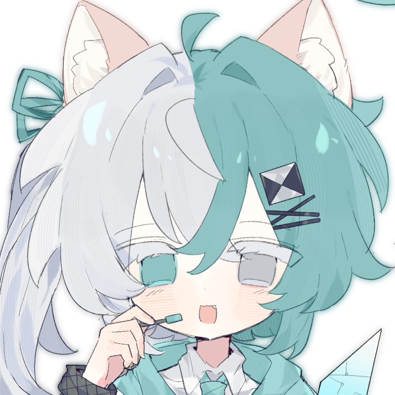

Connect to Lumi
Pick where Lumi is running. On the PC that runs her, that's This PC. On a laptop, use your desktop's remote link.

Pick where Lumi is running. On the PC that runs her, that's This PC. On a laptop, use your desktop's remote link.